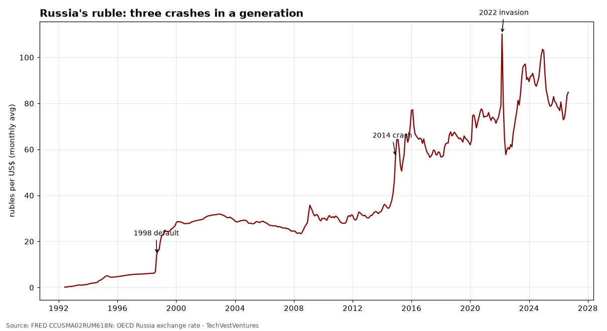
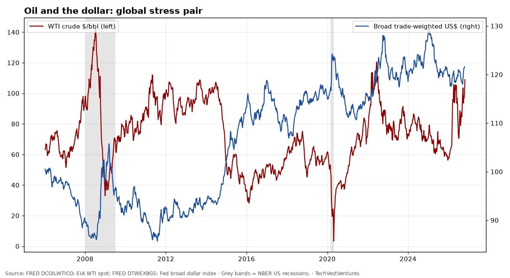

Q6. International

Both indexes indexed to their peaks. The Nikkei 225 fell to about 18% of its 1989 peak and did not regain it until Feb 2024, over 34 years. The Nasdaq lost about 78% and recovered in Apr 2015. Two cases only: they show what a bubble deflation can look like, not that one is due.
Sources: FRED NIKKEI225: Nikkei Inc. Nikkei 225 FRED NASDAQCOM: Nasdaq Composite

IMF World Economic Outlook general government gross debt, % of GDP (latest year in FRED shown in legend). China's ratio has more than doubled since the mid-2010s on the IMF measure, which excludes much local-government financing-vehicle debt.
Sources: FRED GGGDTAJPA188N: IMF WEO Japan FRED GGGDTAITA188N: IMF WEO Italy FRED GGGDTACNA188N: IMF WEO China

BIS total credit to the private non-financial sector (households and companies). China reached 201% of GDP in Oct 2025, up from 107% in 2008. Japan's ratio peaked at 214% in Oct 1993 before its lost decades; the BIS has long flagged rapid credit build-ups as a crisis warning.
Sources: FRED QCNPAM770A: BIS China FRED QJPPAM770A: BIS Japan FRED QUSPAM770A: BIS US FRED QXMPAM770A: BIS euro area BIS credit statistics

Rubles per dollar, monthly average (OECD): 84.8 in Sep 2026, peak monthly average 110.2 in Mar 2022. The 1998, 2014 and 2022 ruble collapses each followed a combination of oil weakness, sanctions or default.

WTI crude $107.89 on Oct 20, 2026; Fed broad dollar index 121.4 on Oct 16, 2026. Oil spikes have preceded several US recessions (1973, 1979, 1990, 2008) — four episodes, not a law.
Sources: FRED DCOILWTICO: EIA WTI spot FRED DTWEXBGS: Fed broad dollar index

Long-term US government bond yield from Shiller's data. Major troughs around 1899, 1941 and 2020; one great peak in 1981 (15.3%). In 150 years that is roughly two to two-and-a-half long (Kondratieff-length) cycles — fewer than the more-than-3 repetitions Michael Hentschel requires before treating a long-wave pattern as evidence.
Sources: Robert Shiller, Yale online data